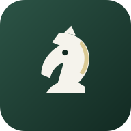

Ativos visuais — para aprovação
Abra este arquivo no navegador. No app real, mascote e selos trocam de cor sozinhos no tema escuro.
Mascote — Professor Lemos
Avatar (tema claro)
Avatar (tema escuro)

Ícone PWA novo
Medalhas (aguardando aprovação da spec C-3)
Retorno de Ouro
Primeira Hora
Tratador de Pendências
Semana Inteira
Calibrado
Referência: não conquistada
Selos de diploma (já integrados na tela Progresso)
Peão — conquistado
Torre — em progresso
Rei — em progresso